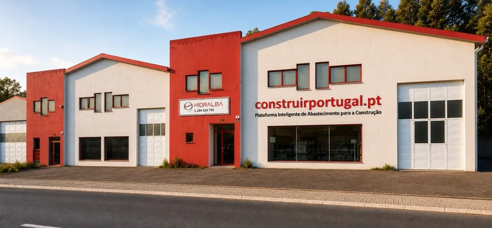
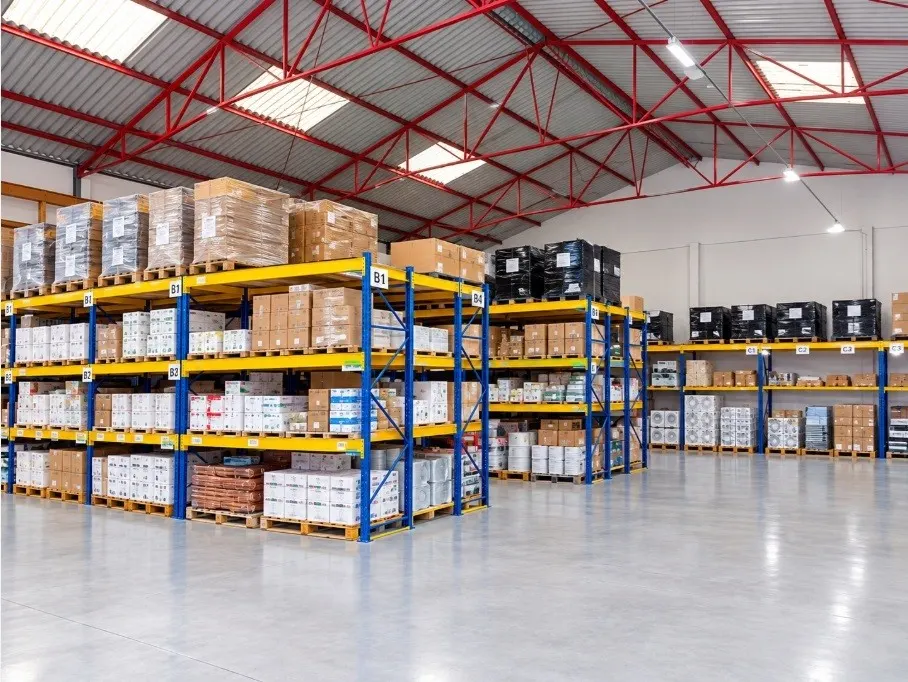
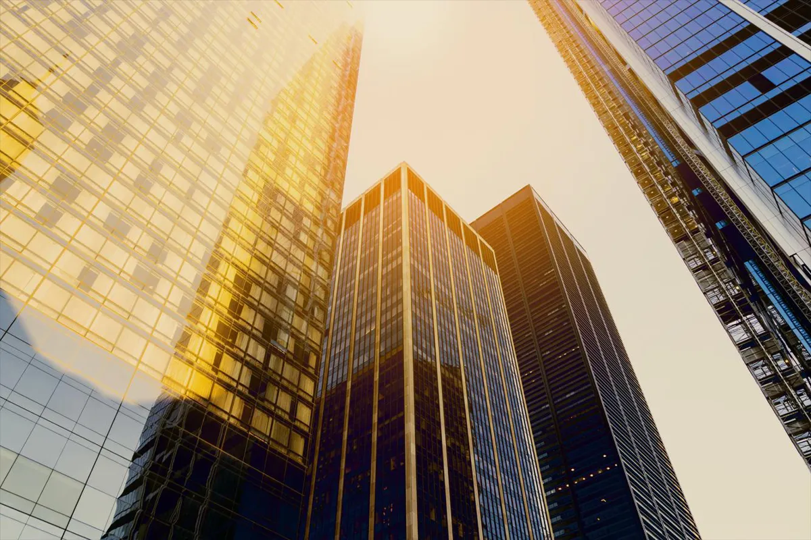

Quem somos
- A Hidralba iniciou a sua atividade em 1985 no comércio grossista de materiais de construção e equipamentos hidrossanitários.
- Ao longo de quatro décadas consolidou relações de confiança com fornecedores, instaladores, construtores e empresas de todo o país.
- Em 2024 iniciou um profundo processo de transformação estratégica, com a entrada da ArtNetwork como parceira tecnológica e gestora do projeto.
- O resultado é a criação da plataforma construirportugal.pt, preparada para integrar Inteligência Artificial, marketplace B2B e uma cadeia logística moderna, que simplifica o processo de compra no setor da construção.
- Hoje procuramos um parceiro estratégico para acelerar a próxima fase de crescimento.

Não estamos apenas a vender materiais de construção. Estamos a digitalizar toda a cadeia de abastecimento do setor.
O nosso percurso
Fundação da Hidralba, Material Hidro-Sanitário.
Especialização no comércio grossista de materiais de construção.
Constituição da Hidralba II, Lda.
Continuidade da atividade empresarial.
Aquisição de 100% da empresa por um único sócio.
Definição de uma nova estratégia de crescimento.
Entrada da ArtNetwork como parceira estratégica.
Responsável pela transformação digital e tecnológica.
Participação acionista de 25%.
Desenvolvimento da plataforma construirportugal.pt.
Implementação de Inteligência Artificial.
Integração de marketplace.
Preparação do novo modelo logístico.
Projeto financiado pelo PRR.
Portal concluído.
Início da fase comercial.
Expansão nacional.
Crescimento da rede de fornecedores.
Escalabilidade do marketplace e da logística.
A Hidralba evoluiu de um grossista tradicional para uma empresa preparada para liderar a transformação digital do setor da construção.
O desafio do mercado
Um setor com enorme potencial, mas ainda pouco digitalizado
O setor da construção em Portugal continua altamente fragmentado. Os profissionais enfrentam diariamente desafios como:
Catálogos dispersos por dezenas de fornecedores.
Processos de orçamentação lentos.
Dificuldade em comparar produtos equivalentes.
Informação técnica distribuída por múltiplas fontes.
Processos de compra pouco automatizados.
Falta de integração entre fornecedores, distribuidores e clientes.
Estas limitações geram custos adicionais, atrasos e menor eficiência em toda a cadeia de abastecimento.
A tecnologia como fator diferenciador
A Inteligência Artificial não substitui os profissionais. Potencia a sua produtividade.
A IA permite:
- Pesquisa inteligente de produtos
- Identificação rápida de alternativas
- Comparação técnica
- Sugestão automática de soluções
- Apoio ao processo de compra
- Redução do tempo de resposta
- Automatização de processos comerciais
- Escalabilidade operacional
Indicadores atuais

Armazém em Águeda · 1.300 m²O mercado
A construção é um dos maiores setores económicos de Portugal, com milhares de empresas e profissionais, mas ainda com digitalização reduzida: uma clara oportunidade de integração tecnológica.
Mercado-alvo
Empreiteiros, empresas de construção, canalizadores, instaladores AVAC, eletricistas, arquitetos, engenheiros, lojas especializadas, distribuidores.
Expansão
A transformação tecnológica já foi feita. O investimento destina-se à fase de crescimento comercial, num mercado grande e ainda pouco digitalizado.
Vantagens competitivas
Modelo tradicional
- Venda de produtos
- Catálogos isolados
- Pesquisa manual
- Orçamentos demorados
- Relação fornecedor-cliente
- Crescimento limitado
Construir Portugal
- Plataforma digital B2B
- Catálogo centralizado
- Inteligência Artificial
- Processos digitalizados
- Ecossistema colaborativo
- Modelo escalável
Principais diferenciais
A vantagem competitiva não é vender materiais: é ligar digitalmente toda a cadeia de abastecimento da construção.
Estratégia comercial e logística
Lançamento comercial (setembro de 2026)
Investimento inicial, nos canais:
Modelo logístico leve em ativos
Operador logístico como a Nacex ou parceiros regionais. Sem rede própria de armazéns: menor investimento em ativos, maior cobertura geográfica, flexibilidade e escalabilidade, menor risco.
Visão futura: centros logísticos distribuídos, operados por parceiros especializados.
A tecnologia está pronta. O foco passa para a aquisição de mercado e a escala, sem inflacionar custos fixos.
Roteiro e projeções financeiras
| 2026 | 2027 | 2028 | 2029 | |
|---|---|---|---|---|
| Fornecedores | 45 | 80 | 100 | 120 |
| Clientes ativos | 60 | 300 | 500 | 1.000 |
| Referências em catálogo | 3.500 | 4.000 | 4.500 | 5.000 |
| Encomendas | 200 | 3.000 | 4.800 | 6.000 |
| Receita prevista | 350.000 € | 1.050.000 € | 1.680.000 € | 2.100.000 € |
Valor médio por encomenda: 250 €. Início dos estudos de internacionalização em 2029.
Crescimento sustentado por tecnologia, expansão comercial e reforço da rede de parceiros: margens que crescem sem depender apenas da estrutura física.
Histórico financeiro e solidez
A redução temporária da faturação resulta exclusivamente de uma decisão estratégica de reorganização da empresa e da preparação da nova plataforma digital. A Hidralba mantém uma situação financeira sólida, sem endividamento financeiro e preparada para iniciar uma nova fase de crescimento.
| 2023 | 2024 | 2025 | 2026 | |
|---|---|---|---|---|
| Volume de vendas | 400 mil € | 400 mil € | 250 mil € | 300 mil € (est.) |
| EBITDA | 40 mil € | 40 mil € | 20 mil € | 30 mil € |
| Situação | Operação normal | Operação consolidada | Redefinição estratégica | Preparação para crescimento |
As projeções apresentadas refletem o início da fase de crescimento após a conclusão da reestruturação operacional e tecnológica realizada em 2025–2026.
Porque a faturação diminuiu?
Em vez de manter um modelo tradicional de crescimento, os acionistas decidiram preparar a empresa para a próxima década. Durante 2025–2026 foram executadas iniciativas estratégicas:
Reestruturação operacional
Desenvolvimento da plataforma construirportugal.pt
Implementação de Inteligência Artificial
Novo modelo logístico leve em ativos
Integração tecnológica
Reorganização comercial
A diminuição temporária do volume de negócios representa um investimento estratégico na transformação do negócio e não uma perda de competitividade. A empresa privilegiou a criação de uma plataforma escalável em detrimento do crescimento de curto prazo.
Porque esta aquisição é diferente?
Uma oportunidade pronta para acelerar
O comprador adquire simultaneamente:
- Empresa com mais de 40 anos de atividade
- Marca reconhecida no setor
- Base de clientes consolidada
- Rede de fornecedores qualificados
- Marketplace B2B operacional
- Plataforma própria de Inteligência Artificial
- Projeto financiado pelo PRR
- Empresa sem dívida financeira
- Modelo logístico escalável
- Equipa tecnológica que permanece após a aquisição
O investimento não financia o desenvolvimento da tecnologia. A plataforma encontra-se concluída e operacional. O objetivo da aquisição é acelerar a expansão comercial e a criação de valor num mercado em rápida digitalização.
Equipa e governação
Estrutura após o investimento
Hidralba II
Origem em 1985, conhecimento profundo do setor, relações consolidadas com clientes e fornecedores, experiência operacional e comercial.
ArtNetwork
Parceira tecnológica e estratégica, responsável pela conceção e desenvolvimento da Construir Portugal, liderança da transformação digital, marketing e inovação.
A ArtNetwork permanece na sociedade, o que garante a continuidade tecnológica e operacional. O investidor entra num projeto com uma equipa que permanece comprometida com a execução e o crescimento.
Aquisição estratégica
Plataforma Digital da Construção
O acionista maioritário pretende assegurar a continuidade e aceleração do projeto através da entrada de um parceiro estratégico ou da aquisição maioritária da sociedade, e a ArtNetwork mantém-se como parceira tecnológica para garantir a continuidade operacional e evolução da plataforma.
Aquisição do capital social
ArtNetwork mantém, o que garante a continuidade da gestão tecnológica
O capital permitirá
Porque agora
Plataforma concluída, IA apoiada pelo PRR, marketplace operacional, carteira de clientes e fornecedores, modelo logístico escalável, equipa comprometida, num mercado em transformação digital.
O capital destina-se a acelerar uma plataforma pronta para crescer, não a financiar o seu desenvolvimento inicial.
Até 2030 pretendemos
- Ser a principal plataforma digital B2B da construção em Portugal
- Reunir uma rede nacional de fornecedores especializados
- Tornar a IA central na pesquisa, comparação e aquisição de produtos
- Operar uma logística nacional eficiente via parceiros especializados
- Iniciar a avaliação de oportunidades de expansão internacional
Ligar pessoas, empresas, tecnologia e logística numa única plataforma, para tornar a compra e a prestação de serviços na área de construção mais simples, rápida e eficiente.
Modernizar e construir o futuro da distribuição na construção civil
A experiência de quatro décadas. A inovação da Inteligência Artificial. A visão de uma plataforma nacional. O compromisso com o futuro da construção.
Procuramos um parceiro estratégico para participar na próxima fase de crescimento de um projeto que une tradição, tecnologia e inovação.
Vamos construir o futuro juntos.